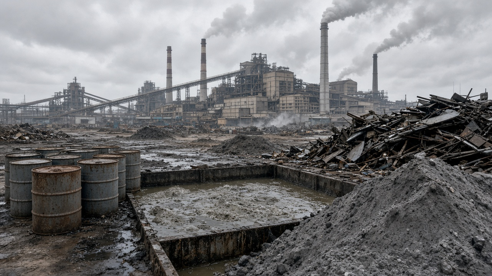
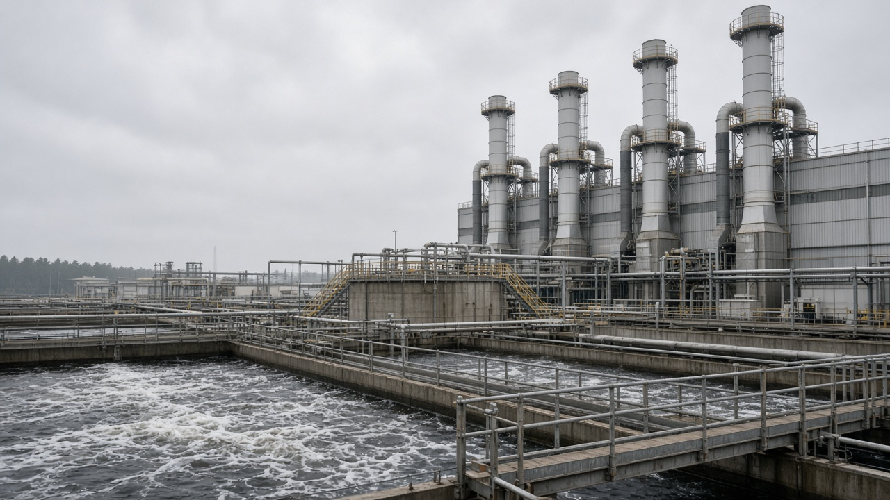
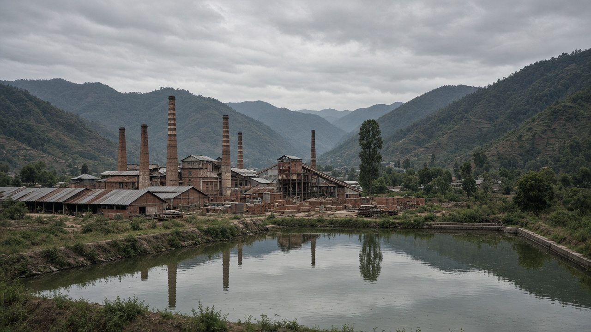

Industrial Waste and Pollution Control
Published on August 19, 2026

Industrial waste includes residues from manufacturing, mining, energy production, and processing industries such as chemicals, metals, textiles, and food processing. This waste may contain heavy metals, solvents, sludge, ash, and toxic by-products that harm workers, nearby residents, and ecosystems if released without control. Pollution control measures aim to capture emissions at the source, treat wastewater before discharge, and safely store or dispose of solid residues. Strong environmental compliance protects both industrial productivity and community wellbeing.
Factories use scrubbers, filters, electrostatic precipitators, and wastewater treatment plants to meet air and water quality standards. Regular monitoring, environmental impact assessments, and reporting systems help regulators detect violations early. Cleaner production audits identify ways to reduce waste generation by improving efficiency, recycling heat, and redesigning processes. When industries treat pollution as a cost of doing business rather than an external problem, they invest more consistently in maintenance and upgrades.
Integrated pollution control links factory operations with national environmental laws and international agreements on hazardous substances and greenhouse gases. Communities affected by industrial zones deserve transparent data, emergency plans, and channels to report concerns. Transitioning to circular industrial models—where one facility's waste becomes another's input—reduces overall burden on landfills and rivers. Responsible industrial waste management supports sustainable development by allowing economic growth while safeguarding air, water, soil, and public health.

औद्योगिक फोहोरमा उत्पादन, खनन, ऊर्जा उत्पादन र रासायन, धातु, कपडा र खाद्य प्रशोधन जस्ता कर्महरूबाट बाँकी अवशेष समावेश हुन्छ। यसमा भारी धातु, विलायक, काद, खर्रा र विषाक्त उप-उत्पादन हुन सक्छ, जुन नियन्त्रण बिना कर्मचारी, नजिकका बासिन्दा र पारिस्थितिकी तन्त्रलाई हानि पुर्याउँछ। प्रदूषण नियन्त्रणले स्रोतमा उत्सर्जन समात्ने, निकास पानी उपचार गरी निस्कासन गर्ने र ठोस अवशेष सुरक्षित भण्डार वा निसर्जन गर्ने लक्ष्य राख्छ। बलियो वातावरणीय पालनले औद्योगिक उत्पादकता र समुदायको कल्याण दुवैको रक्षा गर्छ।
कारखानाहरूले हावा र पानी गुणस्तर मिलाउन स्क्रबर, फिल्टर, विद्युत्-स्थिर अवक्षेपक र निकास पानी उपचार संस्था प्रयोग गर्छन्। नियमित निगरानी, वातावरणीय प्रभाव मूल्यांकन र प्रतिवेदन प्रणालीले नियमकहरूलाई उल्लंघन चाँडो देख्न मदत गर्छ। सफा उत्पादन लेखापरीक्षणले कार्यक्षमता सुधार, ताप पुन: चक्रण र प्रक्रिया पुन: डिजाइन गरी फोहोर उत्पादन घटाउने उपाय पत्ता लगाउँछ। यदि उद्योगहरूले प्रदूषणलाई बाहिरी समस्या होइन व्यवसायको खर्च माने, तिनीहरू मर्मत र सुधारमा नियमित लगानी गर्छन्।
एकीकृत प्रदूषण नियन्त्रणले कारखाना सञ्चालनलाई राष्ट्रिय वातावरणीय कानुन र खतरनाक पदार्थ र ग्रीनहाउस ग्यास सम्झौताहरूसँग जोड्छ। औद्योगिक क्षेत्रले प्रभावित समुदायलाई पारदर्शी तथ्याङ्क, आपतकालीन योजना र चिन्ता राख्ने माध्यमको हक छ। परिपत्र औद्योगिक मोडेलतर्फ सर्दा—जहाँ एक संस्थाको फोहोर अर्कोको आगत हुन्छ—ल्यान्डफिल र नदीमा सामान्य बोझ घट्छ। जिम्मेवार औद्योगिक फोहोर व्यवस्थापनले आर्थिक वृद्धिलाई हावा, पानी, माटो र सार्वजनिक स्वास्थ्य सुरक्षित राख्दै स्थायी विकासलाई समर्थन गर्छ।

औद्योगिक अपशिष्ट में उत्पादन, खनन, ऊर्जा उत्पादन और रसायन, धातु, कपड़ा और खाद्य प्रसंस्करण जैसे कार्यों से बचे अवशेष शामिल होते हैं। इसमें भारी धातु, विलायक, काद, खर्रा और विषाक्त उप-उत्पादन हो सकते हैं, जो नियंत्रण के बिना कर्मचारियों, नज़दीकी निवासियों और पारिस्थितिकी तंत्रों को नुकसान पहुँचाते हैं। प्रदूषण नियंत्रण स्रोत पर उत्सर्जन पकड़ने, निकासी जल का उपचार करके छोड़ने और ठोस अवशेष सुरक्षित भंडार या निपटान करने का लक्ष्य रखता है। मजबूत पर्यावरण अनुपालन औद्योगिक उत्पादकता और समुदाय के कल्याण दोनों की रक्षा करता है।
कारखाने हवा और जल गुणवत्ता के मापदंड पूरा करने के लिए स्क्रबर, फ़िल्टर, विद्युत्-स्थिर अवक्षेपक और निकासी जल उपचार संस्थान का उपयोग करते हैं। नियमित निगरानी, पर्यावरण प्रभाव मूल्यांकन और प्रतिवेदन प्रणाली नियामकों को उल्लंघन जल्दी पकड़ने में मदद करती है। स्वच्छ उत्पादन लेखापरीक्षण कार्यक्षमता सुधार, ऊष्मा पुन: चक्रण और प्रक्रिया पुन: डिज़ाइन करके अपशिष्ट उत्पादन कम करने के उपाय खोजता है। जब उद्योग प्रदूषण को बाहरी समस्या के बजाय व्यवसाय का खर्च मानते हैं, तब वे नियमित रूप से रखरखाव और सुधार में निवेश करते हैं।
एकीकृत प्रदूषण नियंत्रण कारखाना संचालन को राष्ट्रीय पर्यावरण कानून और खतरनाक पदार्थ तथा ग्रीनहाउस गैस समझौतों से जोड़ता है। औद्योगिक क्षेत्रों से प्रभावित समुदायों को पारदर्शी आँकड़े, आपातकालीन योजना और चिंता रखने के चैनल का अधिकार है। परिपत्र औद्योगिक मॉडल की ओर बढ़ने पर—जहाँ एक संस्था का अपशिष्ट दूसरे का इनपुट बनता है—लैंडफिल और नदियों पर सामान्य बोझ कम होता है। जिम्मेदार औद्योगिक अपशिष्ट प्रबंधन आर्थिक वृद्धि को हवा, जल, मिट्टी और सार्वजनिक स्वास्थ्य सुरक्षित रखते हुए स्थायी विकास का समर्थन करता है।